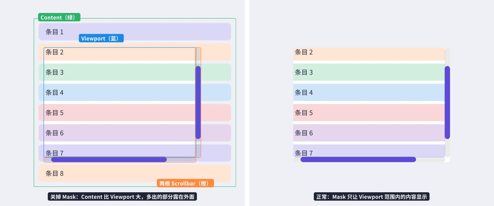
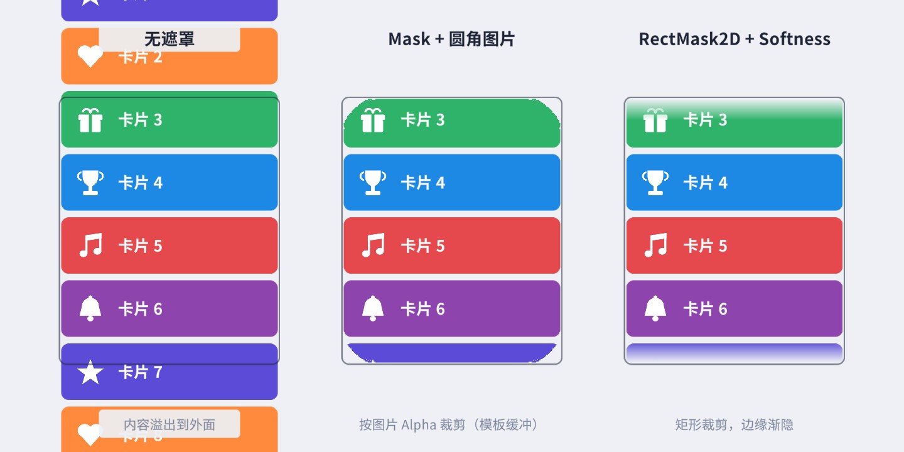
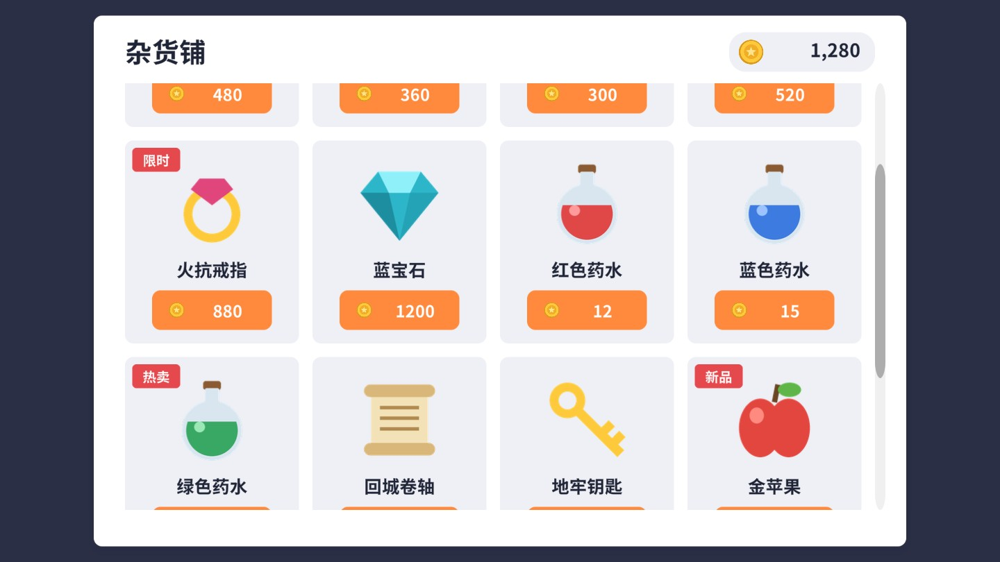
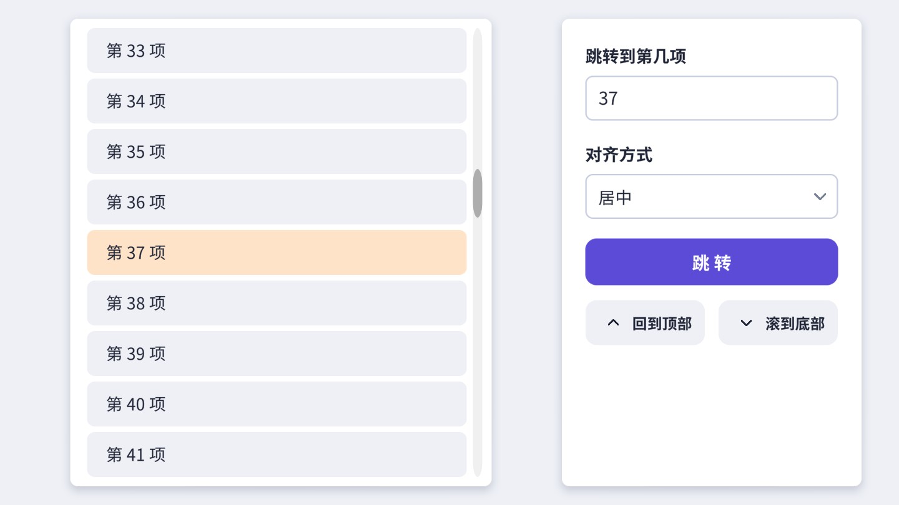
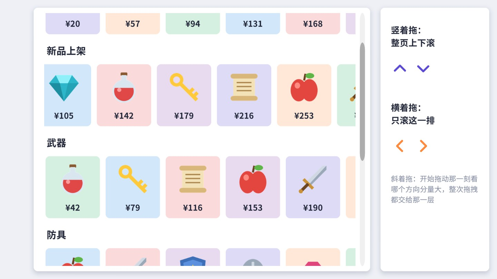

背包、商城、排行榜、聊天记录、设置列表、任务日志、好友名单——几乎每个游戏界面里都有滚动区域。ScrollRect 只有一个组件，却同时管着拖拽、惯性、回弹、滚轮、两根滚动条和视口裁剪。本章先把它的结构与源码里的几条公式讲透，再做商城列表、跳转到第 N 项、轮播图、横竖嵌套、下拉刷新五个最常见的需求。
滚动的本质很简单：一块比窗口大的内容（Content），在一个固定大小的窗口（Viewport）后面移动，窗口之外的部分被裁掉。ScrollRect 负责“移动”，遮罩负责“裁掉”。在 Hierarchy 里右键 创建一个，层级如下：

Mask + Image（Show Mask Graphic 关闭）。它定义“窗口”的大小，并裁掉窗口外的内容。
Content内容的容器，所有列表项都放在它下面。默认锚点在顶部、轴心 (0, 1)，宽度跟随 Viewport、高度 300。ScrollRect 滚动时改的就是它的 anchoredPosition。
Scrollbar Horizontal / Vertical两根滚动条（第 7 章的 Scrollbar），ScrollRect 会根据内容和视口的比例设置它们的 size 与 value，反过来拖动滚动条也会移动内容。
有几个默认设置值得留意：两根滚动条的可见性都是 Auto Hide And Expand Viewport（内容放得下时自动隐藏滚动条、并让视口占满滚动条原来的位置），间距是 −3（滚动条和视口略微重叠）。这个“扩展视口”功能要求 Viewport 和两根滚动条都是 ScrollRect 的直接子物体，ScrollRect 会接管 Viewport 的锚点和尺寸（Inspector 里会显示 “Some values driven by ScrollRect”）。
UIKit.ScrollView() 把它换成了 RectMask2D：对矩形视口来说两者效果一样，但 RectMask2D 不需要模板缓冲、不会额外增加绘制批次，通常更省（9.6 节对比，第 14、20 章深入）。只有视口不是矩形（圆角、异形）时才需要 Mask，这是全书统一的约定。ScrollRect 和它的两根滚动条是“互相驱动”的：滚动时，ScrollRect 在 LateUpdate 里发现位置或尺寸变了，就调用 UpdateScrollbars 设置滚动条的 size 与 value；拖动滚动条时，滚动条的 onValueChanged 触发 ScrollRect 在 OnEnable 里注册的 SetVerticalNormalizedPosition，反过来移动 Content。size 的计算有一个细节：
// 摘自 com.unity.ugui 1.0.0 Runtime/UI/Core/ScrollRect.cs（UpdateScrollbars）
if (m_ContentBounds.size.y > 0)
m_VerticalScrollbar.size = Mathf.Clamp01((m_ViewBounds.size.y - Mathf.Abs(offset.y)) / m_ContentBounds.size.y);
else
m_VerticalScrollbar.size = 1;
m_VerticalScrollbar.value = verticalNormalizedPosition;
分子里减去了越界量 |offset|：Elastic 拉过头时，滚动条的滑块会变短，就像手机系统列表拉到头时滚动条被“挤扁”一样，这是一个刻意的视觉反馈。另一个值得知道的点是 Auto Hide And Expand Viewport 的实现：ScrollRect 同时实现了 ILayoutGroup，在布局阶段的 SetLayoutHorizontal 里先把视口铺满、强制重建一次 Content 的布局看是否放得下，放不下再把视口缩窄、给滚动条腾出位置、再重建一次——也就是说，开启这个选项的滚动视图，在内容变化时可能触发 Content 的多次布局重建。内容频繁变化的列表（如实时日志）可以改用 Permanent 或 Auto Hide，省掉这部分开销。
最后说一下 ScrollRect 自己的那张 Image：根节点上的 Image 不只是背景，它还是“空白处也能拖动”的保证——列表项之间的缝隙、内容不满一屏时下方的空白，射线命中的都是它，事件再冒泡到同一物体上的 ScrollRect。把它删掉或关掉 Raycast Target，就会出现“只有按在列表项上才能拖”的问题。不想要背景色，就把颜色的 Alpha 设为 0，而不是禁用组件。
position += scrollDelta * m_ScrollSensitivity，而滚轮每一格的 scrollDelta 通常只有 1 左右（以实际平台为准），也就是每格只移动约 1 个画布单位，在 1920×1080 参考分辨率的画布上几乎感觉不到。PC 游戏通常要调到 20～50。
Viewport视口。不设时用 ScrollRect 自身的矩形当视口。
Horizontal / Vertical Scrollbar关联的滚动条，以及它们的 Visibility（Permanent / Auto Hide / Auto Hide And Expand Viewport）和 Spacing。
On Value Changed (Vector2)滚动位置变化时触发，参数是 normalizedPosition。拖动、惯性、回弹期间每帧都会触发。
| 成员 | 说明 |
|---|---|
content / viewport | 内容与视口的 RectTransform，可以运行时替换（比如切换页签时换一组内容）。 |
normalizedPosition、horizontalNormalizedPosition、verticalNormalizedPosition | 读写滚动位置（0～1），设置时会清零对应方向的速度。 |
velocity | 当前惯性速度（Content 单位/秒），可读可写。写一个速度就能用代码“甩”一下列表。 |
StopMovement() | 速度清零，立即停止惯性滑动。 |
onValueChanged | 位置变化事件，参数为 normalizedPosition。 |
OnBeginDrag / OnDrag / OnEndDrag / OnScroll | 都是 public virtual，可继承重写，也可以由别的组件手动调用来转发事件（案例 9.4）。 |
Rebuild / SetLayoutHorizontal 等 | ScrollRect 同时是 ICanvasElement 和 ILayoutGroup，参与画布重建和布局流程，一般不需要手动调用。 |
ScrollRect 的手感全部由两段代码决定：拖拽时的 OnDrag，以及每帧都在跑的 LateUpdate。先看拖拽：
// 摘自 com.unity.ugui 1.0.0 Runtime/UI/Core/ScrollRect.cs（OnDrag，节选）
var pointerDelta = localCursor - m_PointerStartLocalCursor;
Vector2 position = m_ContentStartPosition + pointerDelta;
// Offset to get content into place in the view.
Vector2 offset = CalculateOffset(position - m_Content.anchoredPosition);
position += offset;
if (m_MovementType == MovementType.Elastic)
{
if (offset.x != 0)
position.x = position.x - RubberDelta(offset.x, m_ViewBounds.size.x);
if (offset.y != 0)
position.y = position.y - RubberDelta(offset.y, m_ViewBounds.size.y);
}
SetContentAnchoredPosition(position);
private static float RubberDelta(float overStretching, float viewSize)
{
return (1 - (1 / ((Mathf.Abs(overStretching) * 0.55f / viewSize) + 1))) * viewSize * Mathf.Sign(overStretching);
}
Content 的目标位置是“按下时的位置 + 手指移动量”，所以内容会严格跟着手指走。CalculateOffset 算出“要把内容拉回边界内需要移动多少”（没越界时为 0），先把位置拉回边界，再用 RubberDelta 把一个打了折扣的越界量加回去——这就是橡皮筋效果：手指越界拉得越多，内容跟得越吃力，但永远不会超过一个视口的长度。
再看 LateUpdate 中“松手之后”的部分：
// 摘自 com.unity.ugui 1.0.0 Runtime/UI/Core/ScrollRect.cs（LateUpdate，节选）
float deltaTime = Time.unscaledDeltaTime;
Vector2 offset = CalculateOffset(Vector2.zero);
if (!m_Dragging && (offset != Vector2.zero || m_Velocity != Vector2.zero))
{
Vector2 position = m_Content.anchoredPosition;
for (int axis = 0; axis < 2; axis++)
{
// Apply spring physics if movement is elastic and content has an offset from the view.
if (m_MovementType == MovementType.Elastic && offset[axis] != 0)
{
float speed = m_Velocity[axis];
float smoothTime = m_Elasticity;
if (m_Scrolling)
smoothTime *= 3.0f;
position[axis] = Mathf.SmoothDamp(m_Content.anchoredPosition[axis], m_Content.anchoredPosition[axis] + offset[axis], ref speed, smoothTime, Mathf.Infinity, deltaTime);
...
}
// Else move content according to velocity with deceleration applied.
else if (m_Inertia)
{
m_Velocity[axis] *= Mathf.Pow(m_DecelerationRate, deltaTime);
if (Mathf.Abs(m_Velocity[axis]) < 1)
m_Velocity[axis] = 0;
position[axis] += m_Velocity[axis] * deltaTime;
}
...
}
}
if (m_Dragging && m_Inertia)
{
Vector3 newVelocity = (m_Content.anchoredPosition - m_PrevPosition) / deltaTime;
m_Velocity = Vector3.Lerp(m_Velocity, newVelocity, deltaTime * 10);
}
Mathf.SmoothDamp 拉回边界，平滑时间就是 Elasticity。用鼠标滚轮滚过头时（m_Scrolling），平滑时间乘以 3，回弹更柔和。decelerationRatedeltaTime，这是一个与帧率无关的指数衰减。由它可以推出一个实用结论：松手后的总滑行距离 ≈ 松手速度 ÷ (−ln decelerationRate)。默认 0.135 时 −ln 0.135 ≈ 2.0，滑行距离约等于松手速度乘以 0.5 秒；改成 0.05，滑行距离缩短到约三分之一秒的量。想让列表“滑得远一点”，就把这个值调大。EnsureLayoutHasRebuilt()，如果这一帧的布局还没重建过，就先强制 Canvas.ForceUpdateCanvases()。ScrollRect 内部不直接比较 RectTransform，而是把 Viewport 和 Content 都换算成视口本地坐标系里的包围盒（m_ViewBounds、m_ContentBounds），再做所有计算。normalizedPosition 就是从这两个包围盒算出来的：
// 摘自 com.unity.ugui 1.0.0 Runtime/UI/Core/ScrollRect.cs
public float verticalNormalizedPosition
{
get
{
UpdateBounds();
if ((m_ContentBounds.size.y <= m_ViewBounds.size.y) || Mathf.Approximately(m_ContentBounds.size.y, m_ViewBounds.size.y))
return (m_ViewBounds.min.y > m_ContentBounds.min.y) ? 1 : 0;
return (m_ViewBounds.min.y - m_ContentBounds.min.y) / (m_ContentBounds.size.y - m_ViewBounds.size.y);
}
...
}
设置 normalizedPosition 时，SetNormalizedPosition 反过来解出 Content 的 anchoredPosition，并把该方向的速度清零（所以设置位置会打断惯性）。这里有两个高频的坑：
verticalNormalizedPosition = 0，很多人写成 1 然后困惑“怎么回到了顶上”。Canvas.ForceUpdateCanvases()（或对 Content 调用 LayoutRebuilder.ForceRebuildLayoutImmediate），要么等一帧再设置。SetNormalizedPosition 内部虽然也会调用 EnsureLayoutHasRebuilt，但它只在“ScrollRect 自己还从未完成过布局”时才强制重建，不能依赖。还有一个隐藏的规则在 AdjustBounds 里：内容比视口小时，内容包围盒会被扩大到视口大小，扩大的方向由 Content 的轴心决定。轴心在顶部 (y = 1) 时向下扩，于是内容少时贴着顶部、无法滚动——这正是我们想要的。如果你把 Content 的轴心改成了居中，内容少时它会在视口中间上下“漂”，Elastic 回弹也会把它拉到奇怪的位置。竖向列表的 Content 轴心放在顶部，横向列表放在左边，这是约定俗成的规矩。
ScrollRect 只认 Content 的 RectTransform 尺寸。往 Content 下面加了 50 个列表项，如果 Content 自己的高度还是 300，ScrollRect 就认为内容只有 300 高，滚不动，列表项全部溢出在 Content 的矩形之外。所以 Content 上几乎总是挂着两个组件：
Preferred Size，让 Content 的高度等于 LayoutGroup 算出的 preferred height。Preferred Size。Layout Element 设置 Preferred Height（或者让列表项自身提供 preferred height，比如文字）。这样增删列表项时 Content 会自动变高变矮，ScrollRect 和滚动条随之更新。三个案例（商城、跳转、下拉刷新）都是这个结构。为了让 ContentSizeFitter 的计算结果在同一帧可用，前面提到的 Canvas.ForceUpdateCanvases() 会经常出现。
vScrollingNeeded 在非 Play 模式下直接返回 true（源码里 if (Application.isPlaying) ... return true;），所以编辑器里 Auto Hide 的滚动条始终可见，进入 Play 模式后才会按内容多少自动隐藏。不要因此以为可见性设置没生效。Canvas.ForceUpdateCanvases() 会立即对所有画布执行一遍布局和图形重建（相当于提前跑一次本该在渲染前执行的 willRenderCanvases）。在一次操作里调用一两次没有问题，但不要在循环里每加一项就调用一次，也不要放在 Update 里每帧调用。只关心某一个 Content 的尺寸时，用 LayoutRebuilder.ForceRebuildLayoutImmediate(content) 更精确，它只重建这一棵子树的布局。批量添加列表项时，正确的顺序是：先全部添加，再强制重建一次，最后设置滚动位置。
滚动列表里放满了按钮，手指按在按钮上滑动列表，松手时按钮却不会被点击——这是事件系统和 ScrollRect 配合的结果，值得了解一下流程：
由此也能理解两个现象：其一，EventSystem 的 Drag Threshold 太小（高分辨率手机上 10 像素很短），手指轻微抖动就被判定为拖拽，按钮会“点不动”——可以按屏幕 DPI 放大这个阈值，例如 EventSystem.current.pixelDragThreshold = (int)(Screen.dpi / 160f * 10)（Screen.dpi 可能返回 0，要做保护）。其二，如果列表项上的组件自己实现了拖拽接口，pointerDrag 就会是它而不是 ScrollRect，列表也就滚不动了（9.7 节的表）。
Viewport 的裁剪由遮罩组件完成，UGUI 有两种：

| Mask | RectMask2D | |
|---|---|---|
| 原理 | 模板缓冲（Stencil）：先把遮罩图片写进模板缓冲，子物体只在模板值匹配的像素上绘制 | 裁剪矩形：把视口矩形传给子物体的材质，在 Shader 里丢弃矩形外的像素，并在 CPU 端剔除完全在外面的物体 |
| 形状 | 任意，取决于遮罩 Image 的 Alpha（圆角、圆形、异形） | 只能是轴对齐矩形（旋转后不再准确） |
| 额外绘制 | 需要遮罩图形本身的写入和结束时的还原，会增加批次，并打断与外部元素的合批 | 不需要额外绘制 |
| 边缘 | 硬边 | 可设置 Softness 柔化边缘、Padding 调整裁剪边距 |
| 适用 | 圆角视口、圆形头像、异形区域 | 绝大多数矩形滚动区域 |
结论是：滚动视图默认用 RectMask2D，只有视口必须是圆角或异形时才用 Mask。RectMask2D 还会对完全落在视口外的子物体做剔除（不提交绘制），长列表里能省下不少开销。两者的完整原理、嵌套规则、与自定义 Shader 的兼容，以及“软遮罩”的实现，都在第 14 章；开销实测在第 20 章。
Show Mask Graphic，而不是把颜色调透明。② Mask 判断的是像素是否被写入模板，与 Image 的 Raycast Target 无关；但射线检测会额外考虑遮罩：Mask 和 RectMask2D 都实现了 ICanvasRaycastFilter，点击位置在遮罩范围外时，射线不会命中其中的子物体，所以视口外被裁掉的列表项不会响应点击。目标：一个四列的商品网格，商品数据来自配置（名称、图标、价格、角标），点击价格按钮购买、扣金币并提示；列表可上下滚动，PC 上鼠标滚轮也好用。

搭建要点：
Grid Layout Group：Cell Size 334×390、Spacing 26、Constraint 选 Fixed Column Count = 4；再挂 Content Size Fitter，Vertical Fit = Preferred Size。生成卡片时直接 Instantiate(模板, content)，GridLayoutGroup 会接管卡片的位置和尺寸，代码里一个坐标都不用算。循环里给按钮加监听时，同样要先把循环变量拷贝一份（var goods = g;），这里 foreach 的迭代变量在 C# 5 之后其实每次循环都是新变量，拷贝一份是为了让意图一目了然，也防止将来改成 for 循环时踩坑。
刷新数据时保持滚动位置：商品列表刷新（比如购买后库存变化）时，最省事的做法是销毁全部卡片再重建，但重建后列表会跳回顶部。更好的做法是复用已有卡片、只更新数据；如果必须重建，先记下 verticalNormalizedPosition（或者更精确地，记下 Content 的 anchoredPosition.y），重建并强制布局后再恢复。列表长度变化时，按 anchoredPosition 恢复能让“当前看到的那一行”保持不动，按 normalized 恢复则会让位置按比例漂移。
目标：列表有 100 项，输入序号后平滑滚动到该项，可选择让它出现在视口的顶部、中间或底部，并高亮闪一下；用户在滚动过程中一拖动，就立刻停止自动滚动。

思路：把“让第 N 项出现在视口的 align 处”翻译成 verticalNormalizedPosition。设 Hc 为 Content 高度、Hv 为视口高度、t 为目标项顶端到 Content 顶端的距离、h 为目标项高度。要让目标项的 align 点对齐视口的 align 点，Content 需要向上滚动的距离是 s = t + h·align − Hv·align，而 normalized = 1 − s / (Hc − Hv)，再夹到 0～1（最前面几项无法居中，就停在顶端）。
目标项的位置用 TransformPoint / InverseTransformPoint 换算到 Content 本地坐标，而不是直接读 anchoredPosition——列表项的锚点和轴心各式各样，直接读 anchoredPosition 很容易算错，坐标换算则与锚点无关。函数开头的 Canvas.ForceUpdateCanvases() 保证列表刚生成完也能算对（9.4 节的第 2 个坑）。
StopMovement() 清掉惯性速度，否则用户刚甩了一下列表再点“跳转”，惯性和动画会抢着改位置。verticalNormalizedPosition，用 EaseOutCubic 缓动、unscaledDeltaTime 计时。Input.GetMouseButtonDown(0)；更严谨的做法是在 ScrollRect 所在物体上实现 IBeginDragHandler，只有拖动这个列表时才打断。“滚动到指定项”最常见的特例是聊天的“贴底”：新消息到来时，如果用户本来就停在最底部，就自动滚到底；如果用户正在往上翻历史，就不要打扰他，而是显示一个“有 3 条新消息”的提示按钮，点击后再滚到底。判断“本来就在底部”要在添加新消息之前读取 verticalNormalizedPosition（加完之后内容变高，它必然不再是 0），并留一点容差（例如 ≤ 0.01，或者用像素距离判断）。
目标：活动横幅轮播，一屏一页；左右拖动翻页，松手后吸附到整页；快速甩动即使没拖过半页也翻页；底部圆点指示当前页；4 秒无操作自动翻到下一页。
思路：横向 ScrollRect + 每页宽度等于视口宽度。ScrollRect 自带的惯性会让页面停在任意位置，所以关掉惯性，改由我们在松手时决定目标页，再用动画滑过去。第 k 页（共 n 页）对应的 horizontalNormalizedPosition 恰好是 k / (n − 1)，换算非常简单。
Mathf.SmoothDamp 逼近目标位置，SmoothDamp 自带“先快后慢”的手感，并且中途被拖动打断也不会跳变。e.delta 是最后一帧手指的移动量，除以帧时间得到像素/秒。注意它是屏幕像素，不同分辨率的设备上阈值的“手感”不同，严谨一点可以除以 Canvas 的 scaleFactor 换算到参考分辨率下的像素。页面跟随滚动的视觉效果：很多轮播图会让两侧的页面略小、略暗，中间那页放大——即“卡片流”效果。实现方法是监听 ScrollRect 的 onValueChanged，对每一页计算它的中心到视口中心的距离，按距离设置 localScale 和颜色。由于只是改 Transform 和颜色，不改尺寸，不会触发布局重建；颜色变化会让该图形重建网格，页数不多时开销可以忽略。同样的手法还能做视差背景：背景图按 horizontalNormalizedPosition 的一定比例平移，滚动时前景和背景速度不同，画面更有层次。
目标：应用商店式的首页——整页上下滚动，里面每一个分类是一排可以左右滑动的卡片。要求：手指按在卡片上竖着拖，整页上下滚；横着拖，只滚这一排。

问题出在哪：手指按下时，事件系统从命中的卡片图片开始往上找第一个实现了拖拽接口的组件，找到的是内层横向 ScrollRect，之后这一整次拖拽的所有事件都只发给它。内层只能横向滚动，竖向的移动量被它直接丢掉——外层根本收不到事件，于是“按在卡片上竖着拖，页面纹丝不动”。
解决思路：让内层在 OnBeginDrag 时判断这次拖动的主方向：如果是自己负责的方向，就自己处理；否则就把这一次拖拽的 OnBeginDrag、OnDrag、OnEndDrag 全部转交给外层 ScrollRect。ScrollRect 的这些方法都是 public virtual，继承它、重写这几个方法即可：
OnInitializePotentialDrag 在按下时就转给外层一份：外层正在惯性滑动时，手指按下应该让它停住，这正是外层 OnInitializePotentialDrag 里“速度清零”的作用。transform.parent.GetComponentInParent<ScrollRect>() 找到——从父节点开始找，否则会找到自己。继承 ScrollRect 的方案要求把内层列表的组件换成 NestedScrollRect。如果内层列表来自第三方插件、不方便改类型，也可以写一个独立组件挂在内层同一物体上：实现 IBeginDragHandler 等接口“旁听”事件，判断方向后在需要时禁用内层 ScrollRect 并调用外层的对应方法——思路相同，只是要处理好“禁用内层、拖完再启用”的时机。
目标：好友动态列表。列表在顶端时继续往下拉，顶部出现“下拉刷新”提示，拉过阈值变成“松开立即刷新”，松手后显示“正在刷新…”并保持住，数据回来后插入新动态、提示收起；滚到底部时自动加载下一页，加载完三页后显示“没有更多了”。
思路：完全基于 Elastic 模式。内容在顶端时继续下拉，Content 的顶端会离开视口顶端（anchoredPosition.y 变成负数），离开的距离就是“下拉了多少”；松手后 Elastic 会把它弹回。我们要做的只是：
IEndDragHandler，松手时如果已过阈值就开始刷新。第 4 点的解法：松手开始刷新时，给 Content 的 VerticalLayoutGroup 加一段等于提示条高度的顶部 padding，并把提示条的轴心改到顶边，让它“住进” Content 里面；Content 因此变高、所有列表项下移了一个提示条的高度，为了画面不跳，同时把 Content 往上挪同样的距离（Nudge）。此时 Content 仍处在越界状态，Elastic 回弹会平滑地把它拉到顶端——结果就是提示条稳稳停在列表顶部。刷新结束时反向操作：去掉 padding、把提示条移回外侧、Content 下挪补偿，然后回弹把提示条平滑地收出视口。整个过程没有写一行动画代码，全靠 ScrollRect 自己的回弹。
为什么不在刷新期间把 Movement Type 改成 Unrestricted 来“定住”内容？因为那样内容会停在用户松手时的任意位置（可能拉下来 300 像素），而且刷新期间用户再拖动时没有边界可言；改成 Clamped 又会让内容瞬间跳回顶端、提示条直接消失。加 padding 的方案让“刷新中”变成一个合法的边界状态，ScrollRect 的所有行为（拖动、惯性、回弹）都继续正常工作，这是它最大的好处。
Nudge 里先调用 LayoutRebuilder.ForceRebuildLayoutImmediate，让 padding 的变化立即反映到 Content 尺寸上，再改位置；否则 ScrollRect 下一帧按旧尺寸计算回弹，会出现一帧的跳动。
上拉加载更简单：onValueChanged 中检测 verticalNormalizedPosition ≤ 0（滚到底，或者 Elastic 越过了底部），并且当前没在加载、还有更多数据，就触发 onLoadMore；数据回来后追加列表项，把“加载更多”提示移到最后。条件里还检查了“内容比视口高”——内容不满一屏时 normalizedPosition 恒为 0 或 1，不加这个判断会在一打开界面就无限触发加载。
数据层（模拟请求、插入或追加条目）放在 FeedDemo 里，PullToRefresh 只通过 onRefresh / onLoadMore 两个事件和 EndRefresh / EndLoadMore 两个方法与外界交互，可以直接拿去给任何竖向列表用。
| 现象 | 原因与解决 |
|---|---|
| 拖不动 / 拖了又弹回原处 | Content 尺寸没有比 Viewport 大（忘了加 ContentSizeFitter），或者 Content 的轴心/锚点不对。用图 9-1 的方法临时关掉遮罩看看 Content 的实际范围。 |
| 只有拖空白处能滚，拖列表项不能滚 | 列表项上有组件拦截了拖拽事件（实现了 IDragHandler，例如 Slider、另一个 ScrollRect、自定义的拖拽脚本）。参考案例 9.4 转发事件。按钮不会拦截拖拽。 |
| 拖空白处滚不动，拖列表项能滚 | 空白处没有能接收射线的 Graphic。给根节点或 Viewport 留一张 Raycast Target 开启的 Image（可以全透明）。 |
| 设置 normalizedPosition 后位置不对 | 布局还没重建（9.4 节），先 Canvas.ForceUpdateCanvases()；或者方向弄反了（竖直 1 是顶部）。 |
| 竖向列表左右晃 | Horizontal 没关，或者 Content 比 Viewport 宽一点点（例如列表项宽度超出）。 |
| 滚轮几乎不动 | Scroll Sensitivity 默认 1，调到 20～50。 |
| 滚动时掉帧 | 常见原因：列表项太多（换虚拟列表，第 18 章）；列表项带 Outline/Shadow 等昂贵效果；滚动时触发了 Layout 重建（例如 onValueChanged 回调里改了布局）；用了 Mask 打断合批。用 Profiler 和 Frame Debugger 定位（第 20 章）。 |
关于性能，先记住一条结论：单纯移动 Content 不会触发子物体的网格重建——Content 的 anchoredPosition 变了，子物体的世界位置随之变化，但它们的网格是相对自身的，不需要重新生成；Canvas 只需要重新合批（RectMask2D 下还要重新计算裁剪和剔除）。所以滚动本身很便宜，真正的开销来自滚动过程中你额外做的事情，以及子物体的数量。把滚动列表放进单独的子 Canvas，可以避免它每帧的合批影响到界面其余部分，这条“动静分离”的原则第 20 章会用实测数据说明。
ScrollRect 并不只能做“列表”。把一张比屏幕大得多的地图图片放进 Content，同时打开 Horizontal 和 Vertical，就得到了一个可以四向拖动、带惯性和回弹的世界地图或关卡选择图，代码量为零。几个要点：Content 的锚点和轴心都放在中心，尺寸设为地图图片的尺寸（不需要 LayoutGroup）；Movement Type 用 Clamped 或 Elastic，保证地图边缘不会被拖进屏幕中间；关卡按钮作为 Content 的子物体摆在地图上，会跟着一起移动。想要“点击某个关卡后地图自动把它移到屏幕中央”，用案例 9.2 的方法分别算出横竖两个方向的 normalizedPosition 即可。双指缩放 ScrollRect 不支持，需要自己读取两个触点的距离变化去改 Content 的 localScale，并注意缩放后 Content 的包围盒变了，边界计算会自动跟上（ScrollRect 用的是世界角点换算到视口坐标的包围盒，已经包含了缩放）——双指手势的实现见第 11 章。
pointerId，后续只处理这根手指的 OnDrag / OnEndDrag。HorizontalPositionFor，并做一个“横向选关界面”，点击某一关时让它滚到正中间。System.Diagnostics.Stopwatch 在配套工程里测一测：商城列表分别放 100、1000 个商品时，生成全部卡片的耗时，以及滚动时每帧 Canvas.willRenderCanvases 前后的耗时，记录你的机器型号与 Unity 版本。